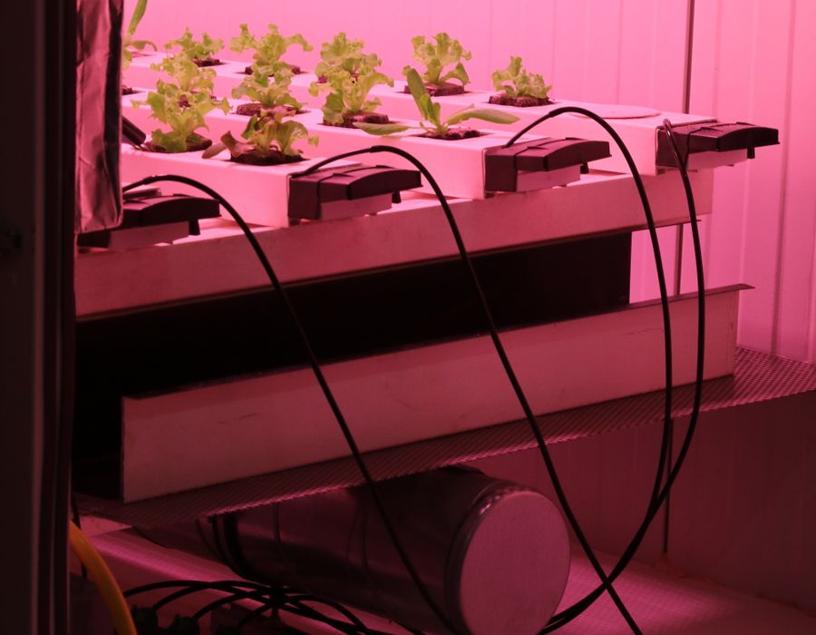
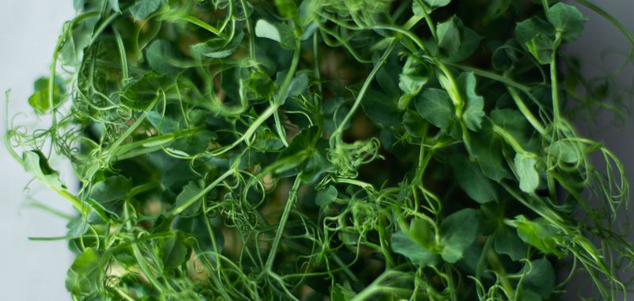
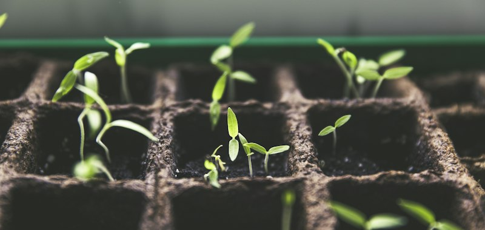
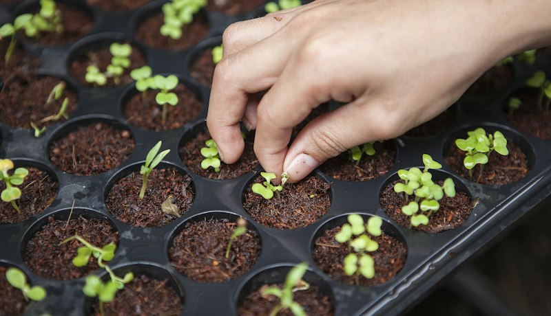
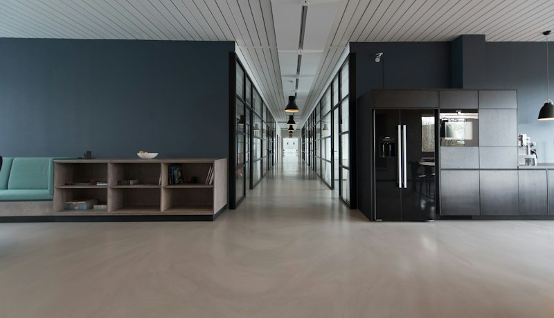

Regional wachsen.
Frisch geliefert.
Microgreens, Kräuter & essbare Blüten – pestizidfreie Vertical Farm mitten in der Region Siegen-Wittgenstein. Von der Ernte bis zu Ihnen in 24 Stunden.
Frische aus der Region,
für die Region.
SiegenGreen Vertical Farms ist ein im Rahmen eines Schulprojekts entworfenes Startup aus Siegen-Wittgenstein. Wir betreiben eine kompakte Vertical Farm in einer lokalen Industriehalle und produzieren ganzjährig hochwertige Microgreens, Kräuter und essbare Blüten – komplett ohne Pestizide, mit 95 % weniger Wasserverbrauch und maximaler Frische.
Unser B2B-Fokus richtet sich an Restaurants, Hotels und Einzelhandel in Südwestfalen. Durch kurze Lieferwege garantieren wir, dass Ihr Produkt binnen 24 Stunden nach der Ernte bei Ihnen ist.
Vertical Farm
120 m² Grundfläche, 600 m² Anbaufläche auf 5 Ebenen
5 Gründer
Interdisziplinäres Team aus IT, Agrar & Business
Südwestfalen
Siegen-Wittgenstein & Kreis Olpe
First Mover
Einzige Vertical Farm in der Region
Vier Schritte.
Maximale Frische.
Unser geschlossener Kreislauf garantiert höchste Qualität – kontrolliert, nachhaltig und blitzschnell.
Präzisionsanbau
Aussaat unter optimierten Bedingungen – kontrolliertes Klima, LED-Vollspektrum-Licht und unser geschlossenes Hydroponiksystem ohne Pestizide.
Ernte auf Bestellung
Wir ernten ausschließlich auf Bestellung – so erreicht Sie jedes Produkt im optimalen Reifezustand, nicht Tage zuvor geerntet.
Nachhaltige Verpackung
B2B in Mehrweg-Pfandgebinden, B2C in kompostierbaren Verpackungen. Kühlkettengerecht und ressourcenschonend.
Lieferung in 24 h
Von der Ernte direkt zu Ihnen – innerhalb von 24 Stunden, regional und mit minimalem CO₂-Fußabdruck.
Drei Produktlinien.
Höchste Qualität.
Alle Produkte werden pestizid- und herbizidfrei unter kontrollierten Bedingungen produziert – ganzjährig, konsistent und innerhalb von 24 Stunden nach der Ernte geliefert.
Microgreens
Junge Keimlinge mit intensivem Aroma und hohem Vitamin- & Mineralstoffgehalt. Ideal für gehobene Gastronomie und Feinkost.
- Erbse & Sonnenblume
- Radieschen & Rote Beete
- Brokkoli & Senf
Frische Kräuter
Überlegen gegenüber Importware durch maximale Frische, längere Haltbarkeit und aromatische Intensität. Direkt aus der Region.
- Basilikum & Koriander
- Petersilie & Minze
- Schnittlauch & Dill
Essbare Blüten
Heiß begehrt in der gehobenen Gastronomie. Ganzjährig verfügbar, konsistente Qualität – ein Alleinstellungsmerkmal für Ihre Küche.
- Stiefmütterchen & Kapuzinerkresse
- Borretsch & Ringelblume
- Weitere Saisonblüten
Fünf Gründe,
die überzeugen.
100 % Pestizidfrei
Kein Einsatz von Pestiziden oder Herbiziden. Vollständige Rückverfolgbarkeit und angestrebte Bio-Zertifizierung.
95 % Wassereinsparung
Unser geschlossenes Hydroponiksystem verbraucht 95 % weniger Wasser als konventioneller Freilandanbau.
24h Lieferung
Von der Ernte bis zu Ihnen in weniger als 24 Stunden. Maximale Frische, längere Haltbarkeit, überlegener Geschmack.
Ganzjährige Verfügbarkeit
Unabhängig von Jahreszeit, Wetter und globalen Lieferketten. Gleichbleibende Qualität 365 Tage im Jahr.
Regionale Exklusivität
Die einzige Vertical Farm in Südwestfalen. First-Mover-Vorteil sichert Ihnen Zugang zu einem einzigartigen lokalen Produkt.
Zwölf Monate frisch.
Statt einer kurzen Saison.
Im Freiland gibt es frische Kräuter und Blüten aus der Region nur wenige Monate im Jahr. Bei uns wächst alles unabhängig von Wetter und Jahreszeit.
| Produkt | Jan | Feb | Mär | Apr | Mai | Jun | Jul | Aug | Sep | Okt | Nov | Dez |
|---|---|---|---|---|---|---|---|---|---|---|---|---|
| Basilikum | ||||||||||||
| Schnittlauch | ||||||||||||
| Kapuzinerkresse-Blüten | ||||||||||||
| Microgreens | ||||||||||||
| im Freiland nicht üblich | ||||||||||||
Sie haben Fragen?
Wir haben Antworten.
Die wichtigsten Fragen unserer B2B-Partner – übersichtlich beantwortet.
Nutzen Sie einfach unser Kontaktformular oder schreiben Sie uns direkt an siegen-green@rutoso.de. Wir erstellen Ihnen ein individuelles Angebot und besprechen Liefermengen, Rhythmus und Produktauswahl persönlich.
Für B2B-Kunden arbeiten wir mit individuell vereinbarten Mindestmengen, die auf Ihre Bedürfnisse abgestimmt sind. Wir sind ein junges Startup und schätzen flexible Partnerschaften – sprechen Sie uns einfach an!
Derzeit beliefern wir Kunden in der Region Siegen-Wittgenstein und Kreis Olpe (Südwestfalen). Durch kurze Lieferwege können wir die 24-Stunden-Frische garantieren. Für Anfragen außerhalb dieser Region nehmen Sie bitte Kontakt auf.
Wir produzieren bereits heute vollständig ohne Pestizide und Herbizide. Die offizielle Bio-Zertifizierung wird aktuell angestrebt und ist eines unserer nächsten Unternehmensziele. Auf Anfrage stellen wir gerne unsere Produktionsdokumentation bereit.
Durch die 24-Stunden-Lieferung direkt nach der Ernte sind unsere Microgreens und Kräuter deutlich länger haltbar als importierte Ware. Je nach Produkt liegt die Haltbarkeit bei gekühlter Lagerung (2–4 °C) bei 5–10 Tagen – gegenüber 1–3 Tagen bei konventionellem Importprodukt.
Unsere Pflanzen wachsen in einem geschlossenen Kreislaufsystem ohne Erde – die Wurzeln werden direkt mit nährstoffreichem Wasser versorgt. Das System recycelt das Wasser vollständig, was den Verbrauch um 95 % gegenüber konventionellem Anbau reduziert. LED-Vollspektrum-Lichter simulieren optimales Sonnenlicht für maximales Wachstum.
Ja, bei regelmäßigen und größeren Bestellmengen bieten wir individuelle Partnerkonditionen an. Wir setzen auf langfristige Partnerschaften und erarbeiten gemeinsam ein Preismodell, das für beide Seiten fair ist. Sprechen Sie uns direkt an!
Unsere Farm.
120 m² Präzisionsanbau.
Auf einer Grundfläche von 120 m² erreichen wir durch unser 5-Ebenen-Regalsystem eine effektive Anbaufläche von 600 m² – ganzjährig, vollautomatisiert und pestizidfrei.





Zahlen, die für sich sprechen.
Unsere Produktionsmethode schont Ressourcen, sichert Qualität und stärkt die regionale Wertschöpfung.
vs. Freilandanbau
zum Kunden
(5 Ebenen)
& Herbizide
Fünf Köpfe.
Eine Vision.
Unser interdisziplinäres Gründerteam vereint Expertise aus Agrarwirtschaft, IT, Finanzen, Logistik und Marketing.
Vivien Matisans
CEO & MarketingUnternehmensführung, Kundenakquise und Markenidentität. Das Gesicht von SiegenGreen nach außen.
Tobias Bäcker
Finanzen & ControllingFinanzplanung, Buchhaltung und Bankbeziehungen. Hält die wirtschaftliche Steuerung im Griff.
Melvin Leimbach
Produktion & TechnikHydroponik, LED-Beleuchtung, Klimasteuerung und Systemwartung – das technische Herzstück der Farm.
Torbjörn Sonneborn
Logistik & DistributionLieferkettenmanagement, Routenoptimierung und Einhaltung der Kühlkette bis zum letzten Kilometer.
Dominik Langenhan
IT & DigitalisierungSensorsysteme, Website-Entwicklung und Social-Media-Marketing. Digitale Infrastruktur der Farm.
Was unsere Partner sagen.
So könnten Stimmen aus Gastronomie und Handel klingen. Alle Namen, Betriebe und Zitate sind für das Schulprojekt erfunden.
„Seit wir SiegenGreen-Microgreens auf der Karte haben, fragen Gäste gezielt danach. Die Qualität ist konstant – kein Vergleich zu importierter Ware. Und die 24-Stunden-Lieferung macht Planung so viel einfacher."
„Als Hotel legen wir großen Wert auf regionale Produkte. SiegenGreen liefert zuverlässig, die Verpackung ist nachhaltig und der Kontakt ist persönlich – genau das schätzen wir an lokalen Partnern."
„Unsere Kunden fragen gezielt nach essbaren Blüten – sie ganzjährig verfügbar zu haben ist ein Alleinstellungsmerkmal im Feinkostsortiment. SiegenGreen ist für uns ein unverzichtbarer Partner geworden."
Interesse geweckt?
Sprechen wir.
Ob Restaurant, Hotel oder Einzelhandel – wir freuen uns auf Ihre Anfrage und erstellen Ihnen ein individuelles Angebot.
Wir beliefern die Region Siegen-Wittgenstein und den Kreis Olpe — innerhalb von 24 h nach der Ernte.
Standort
Region Siegen-Wittgenstein
& Kreis Olpe, Südwestfalen
B2B-Partner
Wir beliefern Restaurants, Hotels, Caterer, Supermärkte & Biomärkte in der Region.
Lieferzeiten
Mo–Fr, innerhalb von 24 h nach Ernte. Flexible Lieferplanung möglich.
Interesse an einem B2C-Abo?
Frische Microgreens & Kräuter direkt nach Hause – unser Subscription-Modell ist in Planung. Jetzt vormerken lassen!
Vormerken lassen